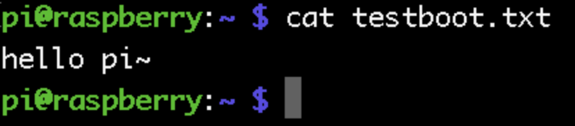

制作开启自动启动的脚本
程序随树莓派开机启动，搜寻并尝试了网上各种方法，经过一番折腾，总结了四种实现开机自启动的方法。
1. 制作测试脚本
首先我们需要制作一个脚本来测试自启动是否有效。在终端下输入并回车新建脚本文件testboot.sh
pi@raspberry:~ $ nano testboot.sh
testboot.sh文件内容如下：
#!/bin/sh
touch /home/pi/testboot.txt
chmod 777 /home/pi/testboot.txt
echo "hello pi~" >> /home/pi/testboot.txt
测试脚本将打印字符串到文件中。按ctrl+o保存文件，再按ctrl+x退出编辑器。
给脚本文件添加执行权限：
pi@raspberry:~ $ chmod 777 testboot.sh
测试一下脚本功能：
pi@raspberry:~ $ ./testboot.sh
执行正常的话会在当前目录（pi）生成一个testboot.txt的文本文件。显示文件内容：
pi@raspberry:~ $ cat testboot.txt

2. 添加自启动
方法一：向rc.local文件添加启动代码
修改rc.local文件，在终端输入并回车：
pi@raspberry:~ $ sudo nano /etc/rc.local
在打开的文本中找到exit 0，在此之前添加的代码在启动时都会被执行，在exit 0 之前添加一行代码：
su pi -c "exec /home/pi/testboot.sh"
ctrl+o保存，ctrl+x退出，然后在终端输入：sudo reboot ,重启系统测试。
su命令是指定在pi用户下执行这条命令，-c 表示执行完这条命令之后恢复原来的用户。
注意：系统启动时在执行这段代码时是使用root用户权限的，如果不指定pi用户，可能会因为权限问题导致脚本执行失败。
方法二：将程序作为服务启动
在/etc/init.d/目录下新建一个服务脚本文件。在终端输入并回车
pi@raspberry:~ $ sudo nano /etc/init.d/testboot
在空白文件中输入以下内容：
#!/bin/sh
#/etc/init.d/testboot
### BEGIN INIT INFO
# Provides:testboot
# Required-Start:$remote_fs $syslog
# Required-Stop:$remote_fs $syslog
# Default-Start:2 3 4 5
# Default-Stop:0 1 6
# Short-Description: testboot
# Description: This service is used to start my applaction
### END INIT INFO
case "$1" in
start)
echo "start your app here."
su pi -c "exec ~/testboot.sh"
;;
stop)
echo "stop your app here."
;;
*)
echo "Usage: service testboot start|stop"
exit 1
;;
esac
exit 0
ctrl+o保存，ctrl+x退出。
设置脚本可执行权限：
pi@raspberry:~ $ sudo chmod 777 /etc/init.d/testboot
最后将该脚本作为服务设置开机自动加载：
pi@raspberry:~ $ sudo update-rc.d testboot defaults
sudo reboot 重启测试。
方法三：通过桌面启动
此方法是在加载了桌面后再启动我们自定义的程序，因此需要安装带有桌面的版本，如果不是请跳过。
在/home/pi/.config/目录下新建一个名为 autostart 的文件夹：
pi@raspberry:~ $ mkdir .config/autostart
在 autostart 目录下新建testboot.desktop （经测试名字任意，但后缀必须是.desktop）：
pi@raspberry:~ $ nano .config/autostart/testboot.desktop
文件内容如下：
[Desktop Entry]
Type=Application
Name=testboot
NoDisplay=true
Exec=/home/pi/testboot.sh
sudo reboot 重启测试。
注意：这个方法除了依赖桌面之外，如果开启了多个桌面则会导致自定义的程序多次启动。比如系统启动桌面会调用一次testboot.sh脚本，如果再用远程桌面登录到树莓派，脚本会再执行一次。
方法四：使用systemctl设置服务
在/usr/lib/systemd/system/ 下新建文件testboot.service:
pi@raspberry:~ $ sudo nano /usr/lib/systemd/system/testboot.service
如果目录system不存在，请自行创建：
pi@raspberry:~ $ sudo mkdir /usr/lib/systemd/system
testboot.service文件内容如下：
[Unit]
Description=testboot
[Service]
Type=oneshot
ExecStart=/home/pi/testboot.sh
[Install]
WantedBy=multi-user.target
这里直接指定启动文件的路径，无法指定到pi用户执行，所以只能在root用户下执行。
设置服务自启动：
pi@raspberry:~ $ sudo systemctl enable testboot.service
注意：这个方法与方法二类似都是通过服务启动，所以如果两种方法同时使用要注意不能使用同个服务名。
3. 总结
除了通过桌面启动以外，其他方式在执行启动代码的时候都是用root用户在执行的，所以需要特别注意权限的问题，最好就全部都指定到pi用户去执行。除了可以执行脚本之外，也可以启动自己写的程序或者python脚本，需要注意的是如果自启动的程序有依赖于其他服务则必须等待其他服务加载完毕才能正常启动，保险的做法延时后再启动。